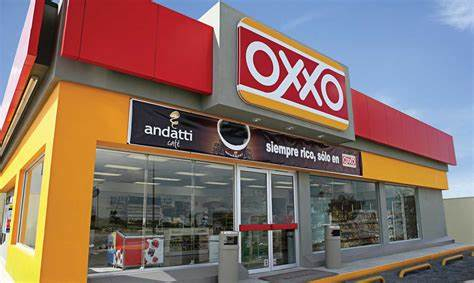
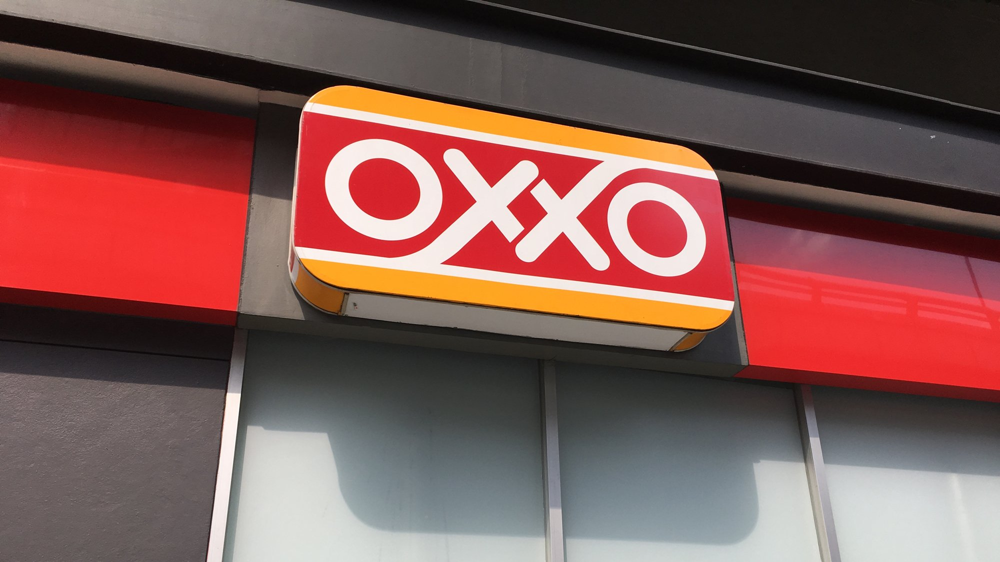
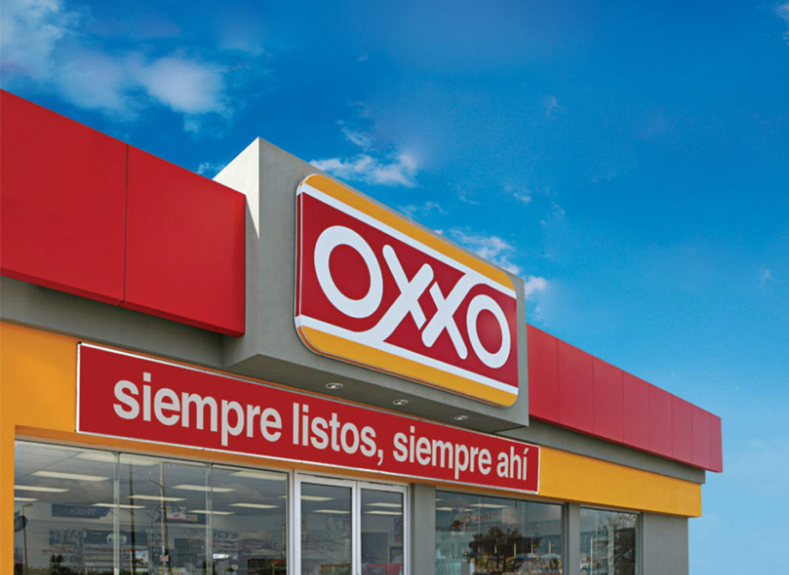
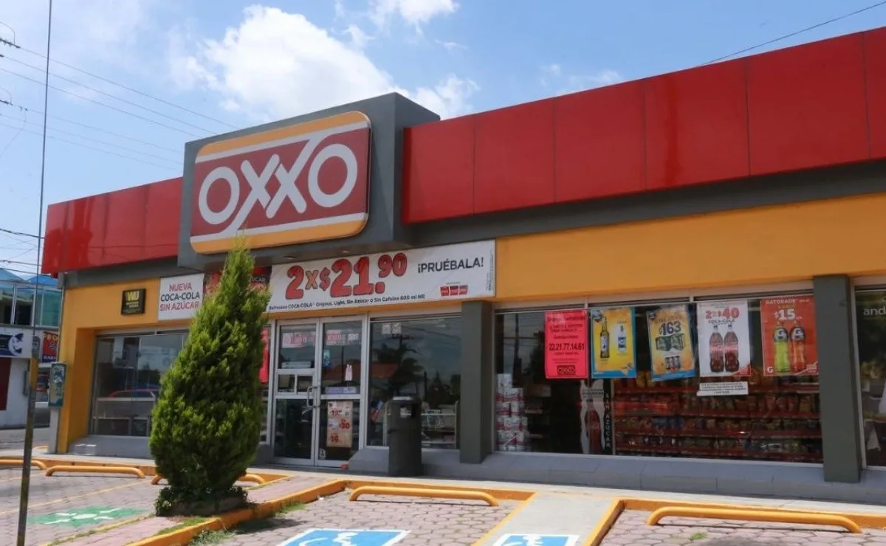
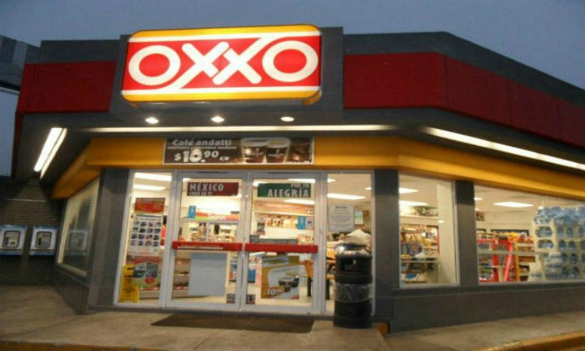

Cadena Comercial OXXO, S.A. de C.V., referida simplemente como Oxxo, es una cadena de tiendas de conveniencia mexicana, propiedad de FEMSA, fundada en Guadalupe, Nuevo León, México, en 1978 y subsidiaria de FEMSA Comercio, S.A. de C.V. y con presencia en varios países de América.
OXXO se ha convertido en una opción ideal para las hacer la despensa de una manera sencilla, óptima y con precios accesibles para las familias mexicanas. En OXXO puedes encontrar aceite para cocina, atún, azúcar, café soluble o de grano (andatti por supuesto), chiles en lata, harina de trigo, pan blanco y pan dulce, leche (normal, condensada y en polvo), harina de maíz y de trigo, pasta para sopa, jabón de lavandería y jabón sanitario, papel higiénico, rastrillos, pilas, toallas sanitarias y pañales
|  |  |  |
|  |  |